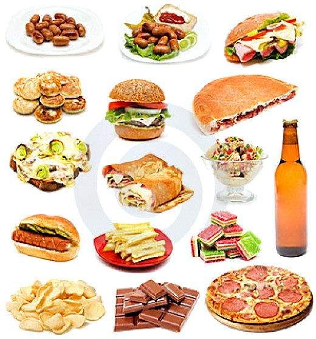

IBS is defined by abdominal pain or discomfort associated with at least two of the following:
Symptom relief by defecation.
Symptoms associated with changes in defecation frequency.
Symptoms associated with changes in stool form.
IBS classified into four subtypes according to predominant stool consistency:
IBS with constipation (IBS-C)
IBS with diarrhea (IBS-D)
Mixed IBS (IBS-M)
UN sub-typed IBS (IBS-U)
IBS is not a fatal disease but it does greatly reduce quality of life.
What is the Epidemiology?
Population-based studies estimate the prevalence of irritable bowel syndrome (IBS) at 10-20%, and the incidence of irritable bowel syndrome at 1-2% per year. Approximately 10-20% seeks medical care. An estimated 20-50% of gastroenterology referrals relate to this symptom complex.
In Western countries, women are 2-3 times more likely to develop irritable bowel syndrome than men, although males represent 70-80% of patients with irritable bowel syndrome in the Indian subcontinent. Women seek health care more often, but the irritable bowel syndrome–specific influence of this occurrence remains unknown.
What are the causes?
The exact cause of irritable bowel syndrome (IBS) is unknown, but most experts think that it's related to problems with digestion, increased sensitivity of the gut or related to Psychological factors.
1- Problems with digestion
In IBS it's thought that this process is altered, resulting in food moving through your digestive system either too quickly or too slowly. If food moves through your digestive system too quickly it causes diarrhea, if food moves through your digestive system too slowly it causes constipation, It has also been suggested that problems such as bile acid mal-absorption.
2- Increased gut sensitivity
Over sensitive to the digestive nerve signals. This means mild indigestion that is barely noticeable in most people becomes distressing abdominal (stomach) pain in those with IBS.
3- Psychological factors
Psychological factors play an important role in IBS. Emotional states such as stress and anxiety can trigger chemical changes that interfere with the normal workings of the digestive system.
4- IBS triggers

Foods and drinks can trigger the symptoms of IBS. Triggers vary from person to person, but common ones include:
Alcohol
Fizzy drinks
Chocolate
Drinks that contain caffeine such as tea, coffee or cola
Processed snacks such as crisps and biscuits
Fatty or fried food
What are the symptoms?
Symptoms of IBS are as follows:
Altered bowel habits
Abdominal pain
Abdominal bloating/distention
Altered bowel habits in IBS may have the following characteristics:
Constipation variably results in complaints of hard stools , painful or infrequent defecation.
Diarrhea usually is described as small volumes of loose stool, with infrequent defecation.
Postprandial urgency is common, as is alternation between constipation and diarrhea.
Characteristically, one feature generally predominates in a single patient Abdominal pain may have the following characteristics:
Common sites of pain include the lower abdomen, specifically the left lower quadrant.
Acute episodes of sharp pain are often superimposed on a more constant dull ache.
Meals may precipitate pain.
Defecation commonly improves pain but may not fully relieve it.
Additional symptoms consistent with irritable bowel syndrome are as follows:
Clear or white mucorrhea of a non-inflammatory etiology
Dyspepsia, heartburn
Nausea, vomiting
Sexual dysfunction
Urinary frequency
Worsening of symptoms in the perimenstrual period
When will you need to visit your doctor?
You will need to see you doctor in case of:
Onset in middle age or older
Acute symptoms
Progressive symptoms
Nocturnal symptoms
Anorexia or weight loss
Fever
Rectal bleeding
Painless diarrhea
Steatorrhea
As these symptoms not consistent with irritable bowel syndrome.
How can IBS be diagnosed?
The Rome IV criteria for the diagnosis of IBS require that patients have had recurrent abdominal pain( NOT discomfort as it is nonspecific )on average at least 1 day per week during the previous 3 months that is associated with 2 or more of the following:
Related to defecation (may be increased or unchanged by defecation)
Associated with a change in stool frequency
Associated with a change in stool form or appearance
Four bowel patterns may be seen with irritable bowel syndrome, and these remain in the Rome IV classification. These patterns include the following:
IBS-D (diarrhea predominant)
IBS-C (constipation predominant)
IBS-M (mixed diarrhea and constipation)
IBS-U (unclassified; the symptoms cannot be categorized into one of the above three subtypes)
A comprehensive history, physical examination, and tailored laboratory and radiographic studies can establish a diagnosis of irritable bowel syndrome in most patients.
Screening studies to rule out disorders other than IBS include the following:
Complete blood count to screen for anemia, inflammation, and infection.
Stool examinations for ova and parasites, enteric pathogen.
History-specific studies include the following:
Hydrogen breath testing to exclude bacterial overgrowth in patients with diarrhea and to screen for lactose and/or fructose intolerance.
Tissue transglutaminase antibody testing and small bowel biopsy in IBS-D to diagnose celiac disease.
Thyroid function tests.
Serum calcium testing to screen for hyperparathyroidism.
Erythrocyte sedimentation rate and C-reactive protein measurement are nonspecific screening tests for inflammation.
What is the Treatment?
First-line therapy for IBS is lifestyle modification. Keeping a diary of foods, situations and emotions that may trigger IBS symptoms can be helpful.
Helpful dietary changes include:
eating small, more frequent meals
avoiding high fat foods
increasing or decreasing fiber
eliminating other problematic foods
Medications that act directly on the GI tract can be used for specific symptoms, such as
Antispasmodic medications are used to treat abdominal cramping and pain. These include:
Hyoscyamine
Dicyclomine
Loperamide (Imodium) is a medication that slows gut motility, can be effective in treating diarrhea, and is available without a prescription
For more severe diarrhea in association with IBS
Alosetron (for diarrhea and IBS-D) may be prescribed to help reduce diarrhea and pain.
3) For mild constipation
Milk of Magnesia is safe and effective for patients and is available over the counter.
It is important to avoid stimulant laxatives, such as senna or cascara, since they may have a negative effect on the bowel and can cause more problems with cramping and pain.
For severe constipation
Your doctor may prescribe a Polyethylene Glycol Solution (PEG), similar to what was once used prior to colonoscopies to thoroughly clear out the bowel.Lubiprostone is also prescribed as a prescription medication used to treat IBS-C or chronic constipation.
Lubiprostone is also prescribed as a prescription medication used to treat IBS-C or chronic constipation.
5) Psychological treatments have also been used to reduce pain and other GI symptoms. Your doctor can refer you to a specialist who can help you with these psychological treatments. Various techniques are used to improve management of symptoms, such as:
Relaxation Therapy
Hypnosis
Cognitive-Behavioral Therapy (CBT) which can be useful in understanding how specific thoughts may have a negative effect on managing an illness.

{kind=link}
{kind=link}
{kind=link}
{kind=link}
{kind=link}
{kind=link}
{kind=link}